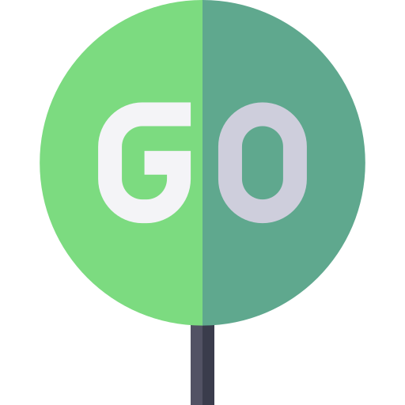
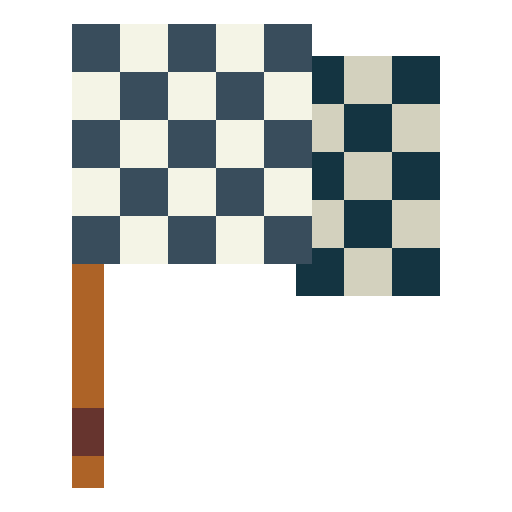
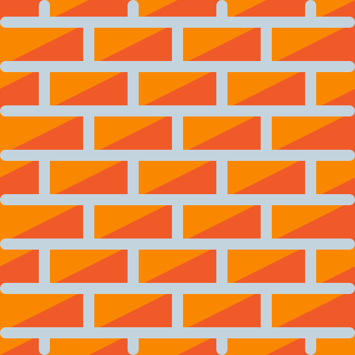

Select an algorithm and click START
Path Finding Visualizer
This page shows graphically how each path finding algorithm works.
A grid is shown with start and end nodes.

Start Node

End Node
Visited Node
Node In Path

Wall
Start and end nodes are draggable, you can move those on the grid.
When ready select the algorithm and click START in the navbar.
Click CLEAR to clean the grid and start over.
The site works only on PC/Desktop.
To continue click 'Ok'.
Path Finding Visualizer
This page shows graphically how each path finding algorithm works.
Start and end nodes are draggable, you can move those on the grid.
When ready select the algorithm and click START in the navbar.
Click CLEAR to clean the grid and start over.
The site works only on PC/Desktop.
Please try again on a PC/Desktop.